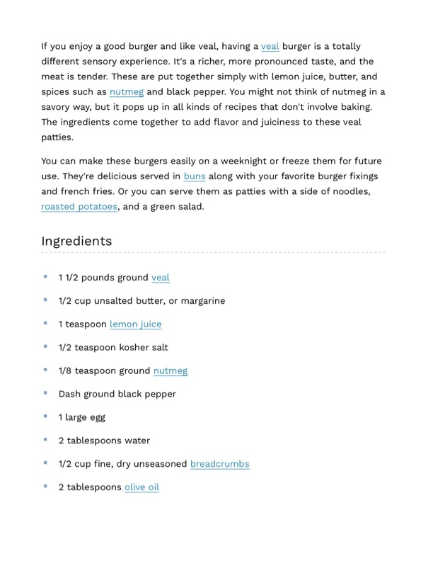

Veal Burgers (Detailed Recipe)

Original cookbook page 280
A rich, tender veal burger seasoned simply with lemon juice, butter, nutmeg, and black pepper. Can be made on a weeknight or frozen for future use. Serve in buns with burger fixings and french fries, or as patties with noodles, roasted potatoes, and a green salad.
Prep: 15 minutes • Cook: 15 minutes • Total: 30 minutes
Ingredients
- 1 1/2 pounds ground veal
- 1/2 cup unsalted butter, or margarine
- 1 teaspoon lemon juice
- 1/2 teaspoon kosher salt
- 1/8 teaspoon ground nutmeg
- Dash ground black pepper
- 1 large egg
- 2 tablespoons water
- 1/2 cup fine, dry unseasoned breadcrumbs
- 2 tablespoons olive oil
Instructions
- In a large bowl, combine ground veal, butter, lemon juice, salt, nutmeg, and black pepper. Mix well and form into 6 patties.
- In a shallow dish, beat together egg and water to create an egg wash.
- Dredge each veal patty in the egg wash, then coat thoroughly with breadcrumbs.
- Heat olive oil in a large skillet over medium heat. Cook patties for about 6-8 minutes per side, or until golden brown and cooked through (internal temperature of 160°F).
- Serve immediately in buns with desired toppings or as patties with sides.
Recipe #280 from collection